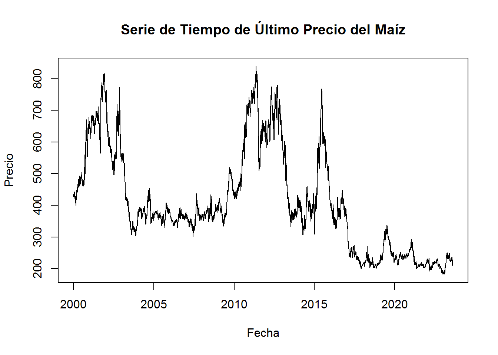
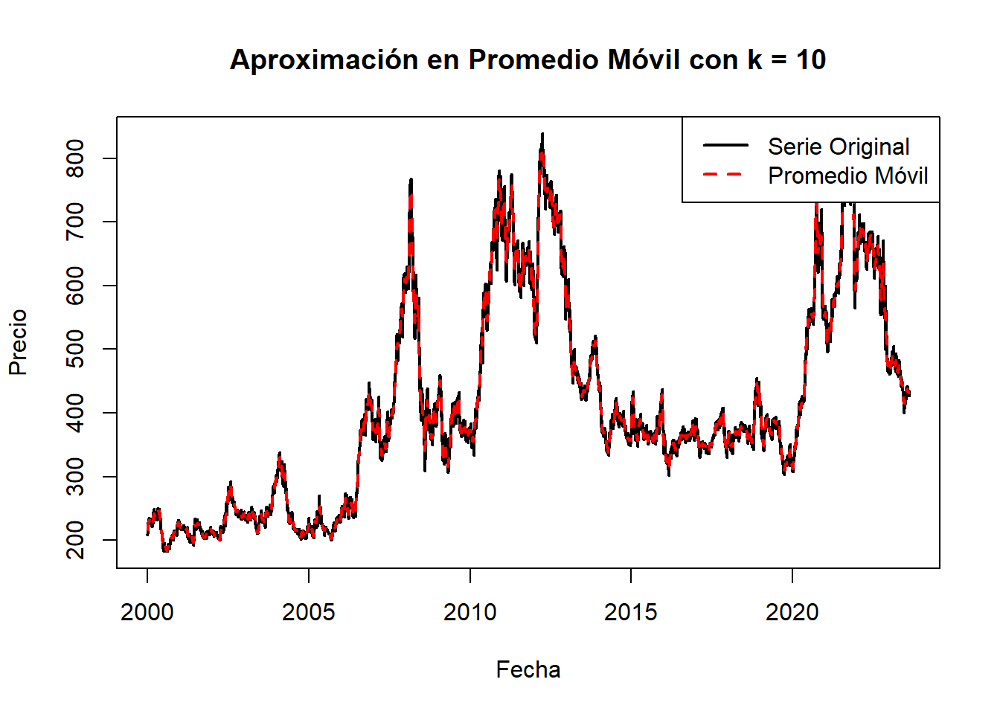
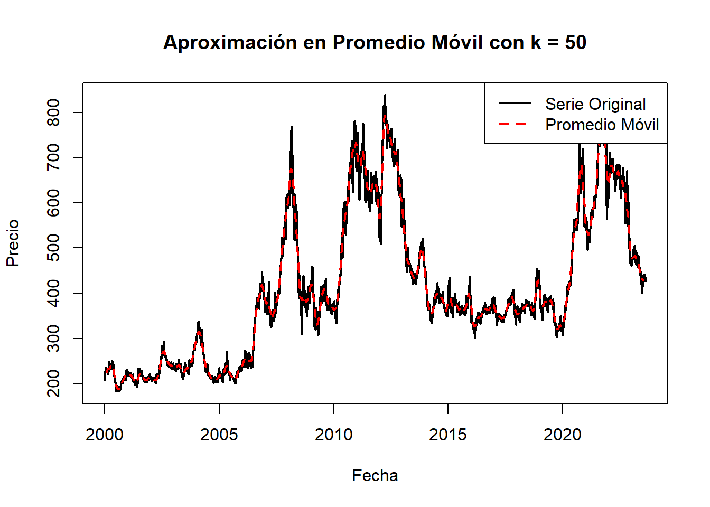
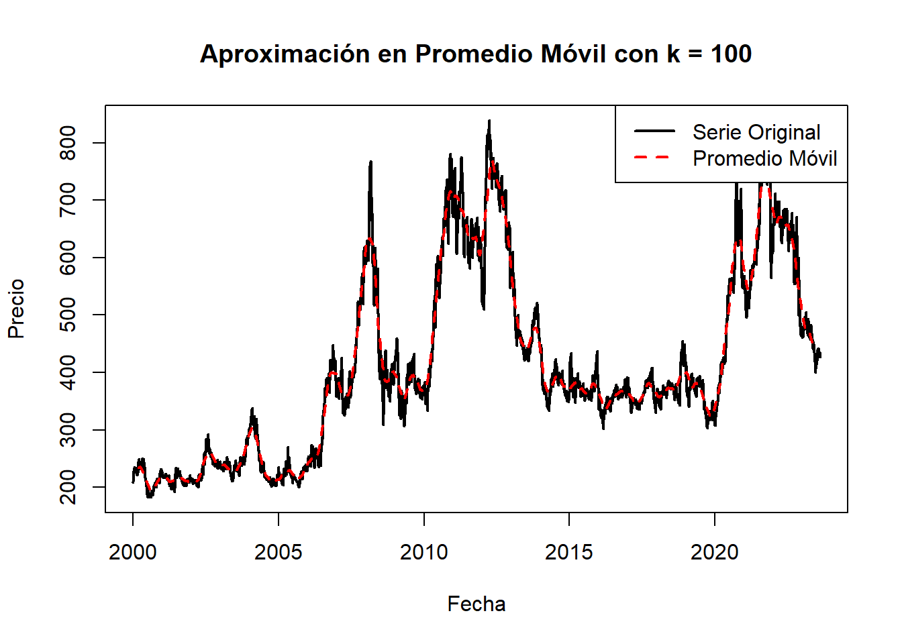
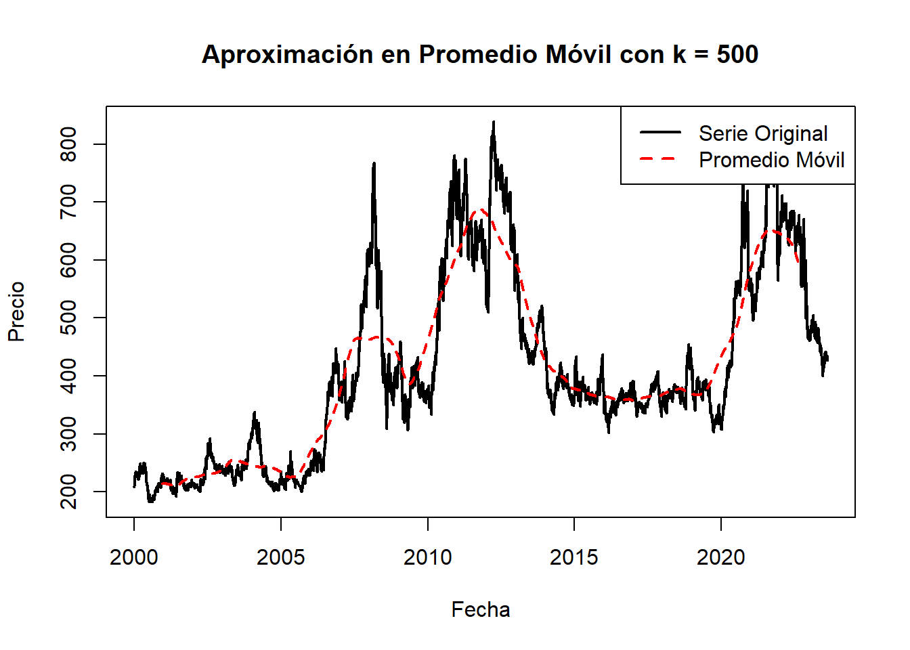
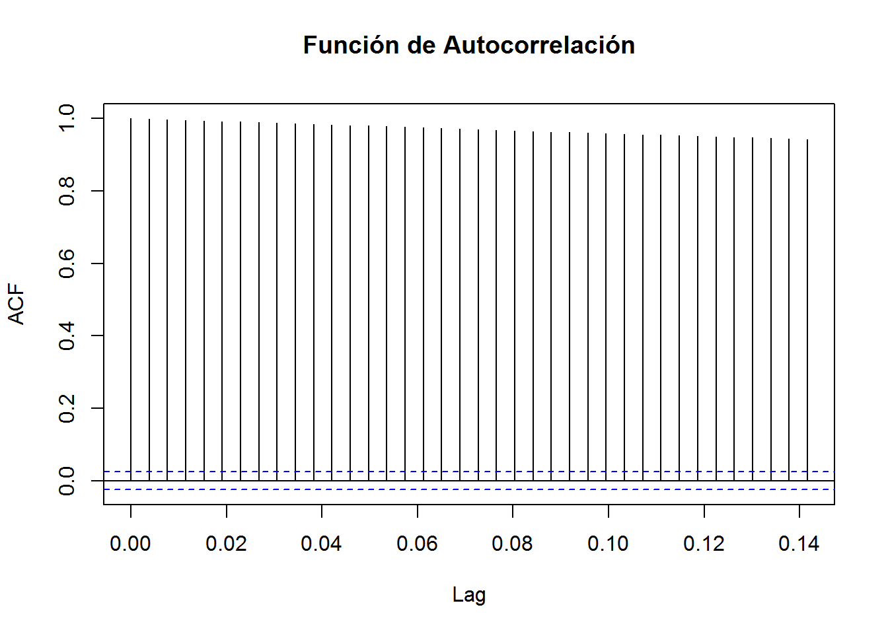
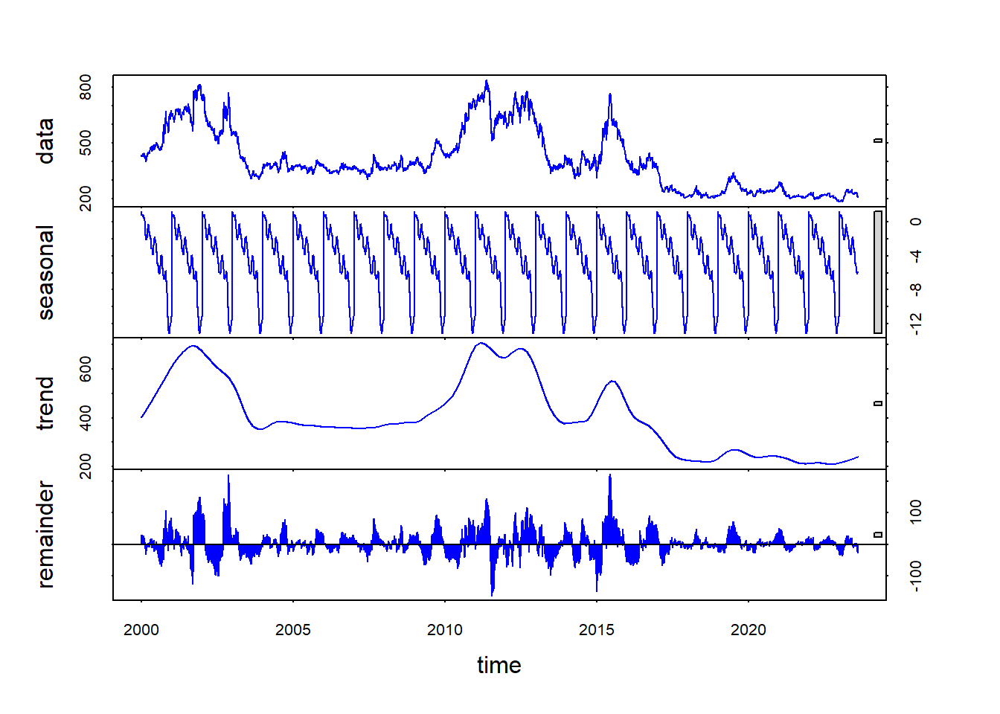

Chapter 5 Series de Tiempo
Convertimos la matriz de datos en series de tiempo
#install.packages("xts")
# Carga el paquete xts
library(xts)## Warning: package 'xts' was built under R version 4.2.3## Loading required package: zoo##
## Attaching package: 'zoo'## The following objects are masked from 'package:base':
##
## as.Date, as.Date.numeric# Asegúrarse de que la columna 'Fecha' esté en formato de fecha
#SI SE EJECUTA DE NUEVO SE DEBE VOLVER A CARGAR
#df_maiz_filtrado$Fecha <- as.Date(df_maiz_filtrado$Fecha)
# Crea una serie de tiempo con la función ts
df_maiz_filtradots <- ts(df_maiz_filtrado$Último, start = c(2000, 1), frequency=261.25)
#df_maiz_filtradots#revisamos que sea una clase ts
class(df_maiz_filtradots)## [1] "ts"#Corroboramos el inicio de la serie
start(df_maiz_filtradots)## [1] 2000Graficamos la serie de tiempo por días desde 03 de Enero del año 2000 hasta el 19 de abril del año 2024, excluyendo los fines de semanaaa
# Graficar la serie de tiempo usando la función plot
plot(df_maiz_filtradots, main = "Serie de Tiempo de Último Precio del Maíz",
xlab = "Fecha", ylab = "Precio", type = "l")
5.1 Aproximación en media móvil
Una parte importante del análisis descriptivo de un conjunto de datos son los indicadores de tendencia central, entre ellos, la media. Sin embargo, en el contexto del análisis de series de tiempo, este indicador puede aumentar su sensibilidad, pues la vulnerabilidad de los datos a cambios impredecibles es más alta que en otros conjuntos de datos. Es por eso que se plantea la media móvil, que se define como el promedio de los datos en una ventana de tiempo, es decir, se toma la media de un intervalo de los datos, en vez de la media de los datos en su totalidad. Esto reduce la variabilidad y se puede utilizar para una mejor descripción de estaciones o ventanas de tiempo específicas.
A continuación se pueden observar diferentes ejemplo de aproximación de los datos a través de la media móvil con diversos k, en dónde k representa el tamaño del intervalo tomado:
# Calcula el promedio móvil k = 10
promedio_movil <- rollmean(df_maiz_filtradots, k = 10, align = "center", fill = NA)
# Gráfico comparativo k = 10
plot(df_maiz_filtradots, type = "l", col = "black", lwd = 2, xlab ="Fecha", ylab ="Precio", main = "Aproximación en Promedio Móvil con k = 10")
lines(promedio_movil, col = "red", lwd = 2, lty = 2)
legend("topright", legend = c("Serie Original", "Promedio Móvil"), col = c("black", "red"), lty = c(1, 2), lwd = 2)
# Calcula el promedio móvil k = 50
promedio_movil <- rollmean(df_maiz_filtradots, k = 50, align = "center", fill = NA)
# Gráfico comparativo k = 50
plot(df_maiz_filtradots, type = "l", col = "black", lwd = 2, xlab ="Fecha", ylab ="Precio", main = "Aproximación en Promedio Móvil con k = 50")
lines(promedio_movil, col = "red", lwd = 2, lty = 2)
legend("topright", legend = c("Serie Original", "Promedio Móvil"), col = c("black", "red"), lty = c(1, 2), lwd = 2)
# Calcula el promedio móvil k = 100
promedio_movil <- rollmean(df_maiz_filtradots, k = 100, align = "center", fill = NA)
# Gráfico comparativo k = 100
plot(df_maiz_filtradots, type = "l", col = "black", lwd = 2, xlab ="Fecha", ylab ="Precio", main = "Aproximación en Promedio Móvil con k = 100")
lines(promedio_movil, col = "red", lwd = 2, lty = 2)
legend("topright", legend = c("Serie Original", "Promedio Móvil"), col = c("black", "red"), lty = c(1, 2), lwd = 2)
# Calcula el promedio móvil k = 500
promedio_movil <- rollmean(df_maiz_filtradots, k = 500, align = "center", fill = NA)
# Gráfico comparativo k = 500
plot(df_maiz_filtradots, type = "l", col = "black", lwd = 2, xlab ="Fecha", ylab ="Precio", main = "Aproximación en Promedio Móvil con k = 500")
lines(promedio_movil, col = "red", lwd = 2, lty = 2)
legend("topright", legend = c("Serie Original", "Promedio Móvil"), col = c("black", "red"), lty = c(1, 2), lwd = 2)
5.2 Componentes de una Serie de Tiempo
Las series de tiempo pueden descomponerse en varias componentes que ayudan a comprender la estructura y los patrones presentes en los datos a lo largo del tiempo. Las principales componentes de una serie de tiempo son:
Tendencia: Representa la dirección general de los datos a largo plazo. Puede ser ascendente, descendente o plana. La tendencia captura cambios graduales y persistentes en los datos a lo largo del tiempo.
Estacionalidad: Se refiere a patrones recurrentes o cíclicos que se repiten en la serie de tiempo a intervalos fijos de tiempo, como diarios, semanales, mensuales o anuales. La estacionalidad puede ser causada por factores como la temporada, eventos naturales o económicos.
Ciclo: Es similar a la estacionalidad, pero con una duración más larga y menos regular. Los ciclos representan fluctuaciones económicas o patrones de negocios que se repiten en períodos de varios años.
Variación aleatoria o ruido: Es la parte no sistemática o irregular de la serie de tiempo que no puede explicarse por la tendencia, la estacionalidad o el ciclo. La variación aleatoria puede deberse a factores aleatorios o eventos impredecibles que afectan los datos.
5.3 Estacionalidad
#install.packages("aTSA")
library(aTSA)## Warning: package 'aTSA' was built under R version 4.2.3##
## Attaching package: 'aTSA'## The following object is masked from 'package:graphics':
##
## identifylibrary(aTSA)
adf.test(df_maiz_filtradots)## Augmented Dickey-Fuller Test
## alternative: stationary
##
## Type 1: no drift no trend
## lag ADF p.value
## [1,] 0 -0.998 0.322
## [2,] 1 -0.999 0.322
## [3,] 2 -0.988 0.326
## [4,] 3 -1.005 0.320
## [5,] 4 -0.999 0.322
## [6,] 5 -1.001 0.321
## [7,] 6 -0.998 0.322
## [8,] 7 -1.017 0.315
## [9,] 8 -1.014 0.317
## [10,] 9 -1.018 0.315
## Type 2: with drift no trend
## lag ADF p.value
## [1,] 0 -1.87 0.381
## [2,] 1 -1.91 0.362
## [3,] 2 -1.84 0.391
## [4,] 3 -1.91 0.362
## [5,] 4 -1.88 0.374
## [6,] 5 -1.87 0.380
## [7,] 6 -1.90 0.367
## [8,] 7 -1.95 0.349
## [9,] 8 -1.95 0.346
## [10,] 9 -1.94 0.351
## Type 3: with drift and trend
## lag ADF p.value
## [1,] 0 -2.58 0.332
## [2,] 1 -2.64 0.305
## [3,] 2 -2.56 0.341
## [4,] 3 -2.64 0.308
## [5,] 4 -2.60 0.322
## [6,] 5 -2.58 0.331
## [7,] 6 -2.63 0.311
## [8,] 7 -2.67 0.294
## [9,] 8 -2.68 0.289
## [10,] 9 -2.66 0.297
## ----
## Note: in fact, p.value = 0.01 means p.value <= 0.01# Calcular la función de autocorrelación
acf_result <- acf(df_maiz_filtradots, plot = FALSE)
# Trazar la función de autocorrelación
plot(acf_result, main = "Función de Autocorrelación")
Trazada ya la serie df_maiz_filtradot, se puede determinar que no presenta una tendencia ascendente o descendente por lo tanto la serie parece ser estacionaria en media. Aplicando la prueba de Dickey-Fuller donde la hipótesis nula de aumentada es que la serie de tiempo tiene una raíz unitaria, lo que significa que no es estacionaria y la hipótesis alternativa es que la serie de tiempo es estacionaria. La prueba arroja un p valor de 0.01 evidenciando que la serie es estacionaria.
# Calcular la descomposición estacional
descomposicion <- stl(df_maiz_filtradots, s.window = "periodic")
# Trazar la descomposición
plot(descomposicion, col = "blue")
La gráfica generada por la función stl muestra la descomposición estacional de una serie de tiempo en tres componentes principales: tendencia, estacionalidad y residuos.
Estacionalidad: La parte intermedia de la gráfica muestra la estacionalidad de la serie de tiempo. Esto representa patrones recurrentes o cíclicos que se repiten a intervalos regulares. Por ejemplo, si la serie de tiempo representa datos mensuales, la estacionalidad mostrará patrones que se repiten cada año.
Tendencia: La línea suavizada en la parte superior de la gráfica representa la tendencia de la serie de tiempo. La tendencia muestra la dirección general en la que los datos están cambiando a lo largo del tiempo. Una tendencia ascendente indica un crecimiento en los datos, una tendencia descendente indica una disminución, y una tendencia plana sugiere estabilidad.
Residuos: La parte inferior de la gráfica muestra los residuos, que son las fluctuaciones aleatorias o irregulares que no pueden ser explicadas por la tendencia o la estacionalidad. Los residuos representan la variación aleatoria en los datos que queda después de eliminar la tendencia y la estacionalidad.
Estoy realizando una prueba de que los cambios que realice si se actualicen en la nube v2, prueba Cristian
Cambios 2, prueba Jairo ohhh
Texto ejemplo a ver si sirve, prueba Laura